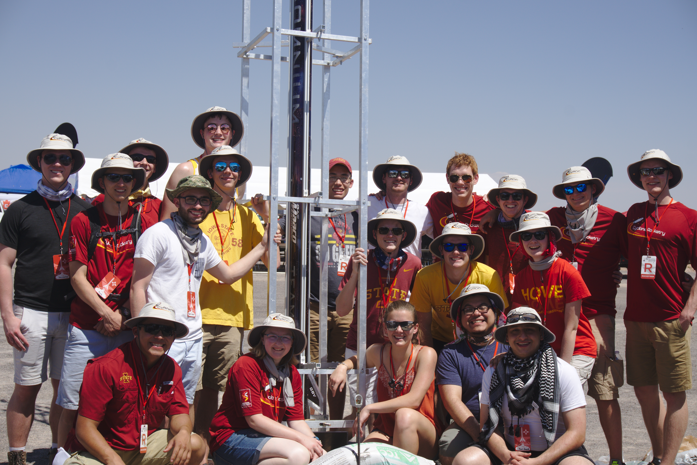
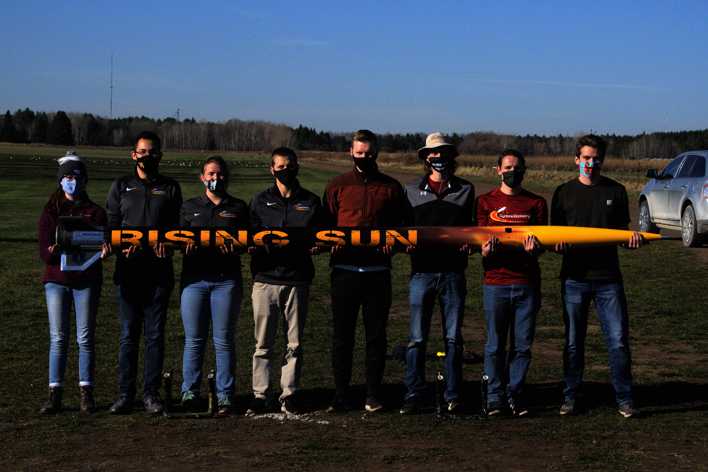

Integrating Runtime Verification into a
Sounding Rocket Control System
Benjamin Hertz, Zachary Luppen, Kristin Y. Rozier
This webpage contains research artifacts from "Integrating Runtime Verification into a
Sounding Rocket Control System" by B. Hertz, Z. Luppen, and K. Y. Rozier
The Cyclone Rocketry Team is Iowa State University's premier high-powered rocketry student organization. Student engineers research, design, manufacture, and test all the components of a sounding rocket in order to compete at the Spaceport America Cup. The team's mission is to provide undergraduates with a hands-on opportunity to participate in rocketry otherwise unavailable in the classroom setting, as well as to excite the local community about rocketry through outreach. We thank the team for providing us with the launch data and figures used in this work. More information about Cyclone Rocketry and its sponsors can be found here: cyclonerocketry.org and CyRoc on Youtube.

